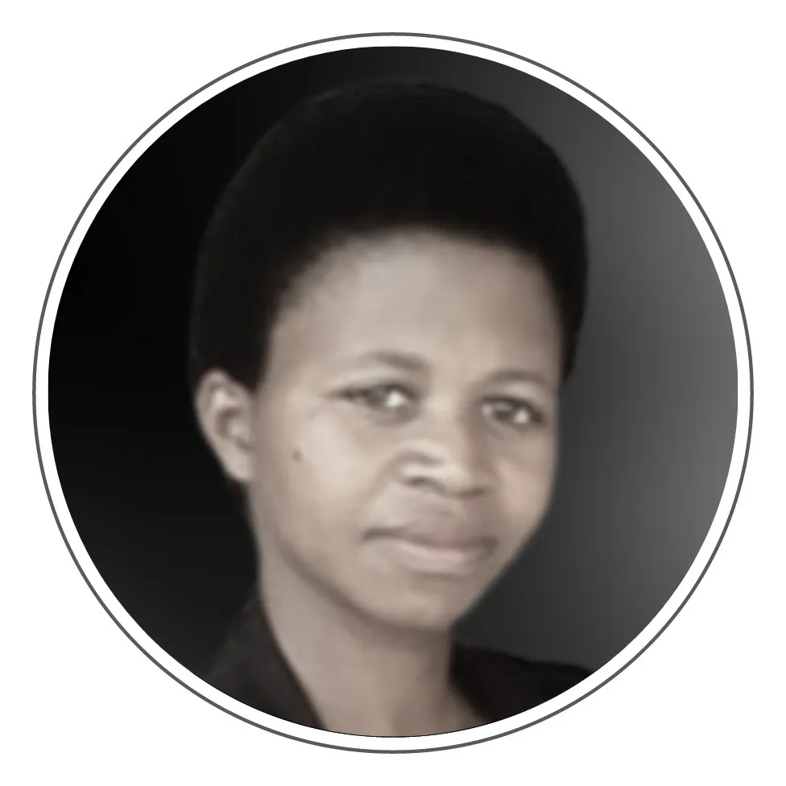
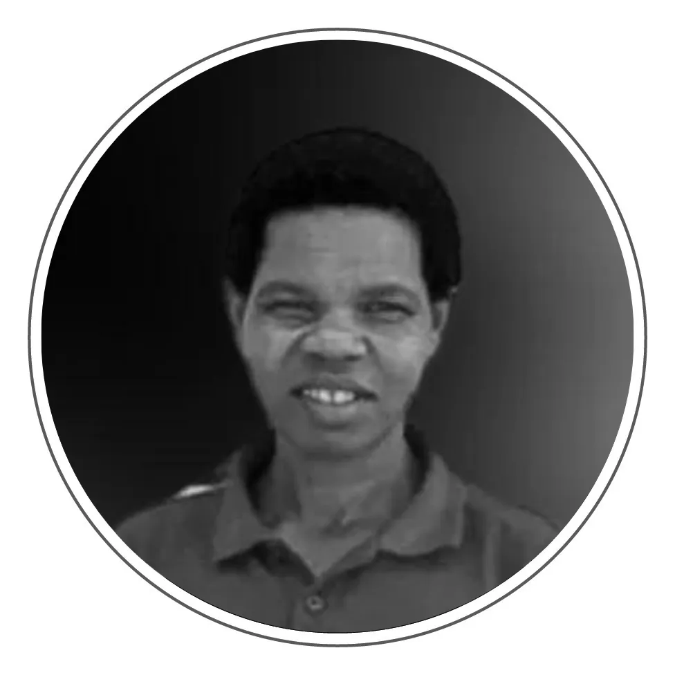
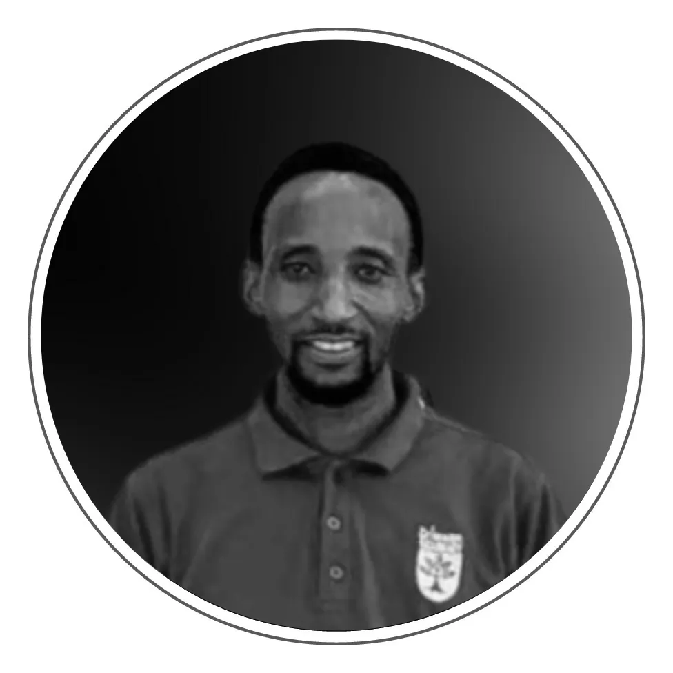
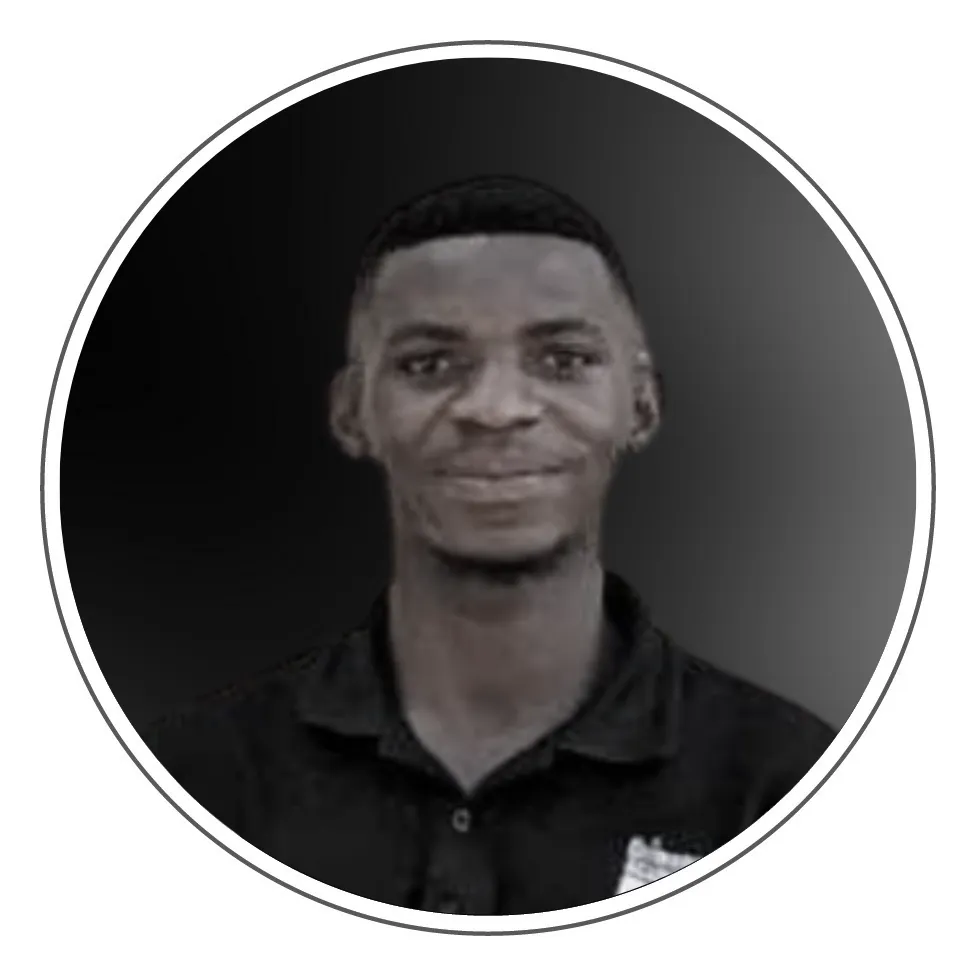

Five steps to a place at Crimson.
The whole process usually takes a couple of weeks, and you deal with the same small group of people from start to finish. The academic year begins in September and runs in three terms through July, following the MINEDUC calendar.
Get in touch
Email us with your child's name, age, and the class you are applying for. We will tell you what places are available for the coming academic year.

You'll hear from Marie Claire Mukabirinda, Head MistressVisit the school
Come and see the campus, meet the teachers, and sit in on a class in session. We encourage every family to visit before enrolling — it is the fastest way to know whether this is the right school for your child.

Nursery families are shown round by Martha NiyotwagiraSit the entrance test
Set at the level of the class your child is applying to enter, so it measures readiness for that year. A place is offered on passing. Bring a recent report card if your child is transferring from another school.

Primary 1–3 testing sits with Damascene Primary 4–6 testing sits with David
Primary 4–6 testing sits with David
Confirm the place and settle fees
Once your child has passed, we confirm the place in writing and set out the fees, including whether you want breakfast and lunch on the meal plan. If fees are a barrier, say so at this point — sponsorship exists precisely for that conversation.

Fees and sponsorship: Jean Claude Twizeyimana, AccountantStart the term
Arrive on the first day with the supply list above and a uniform, and your child starts alongside everyone else.